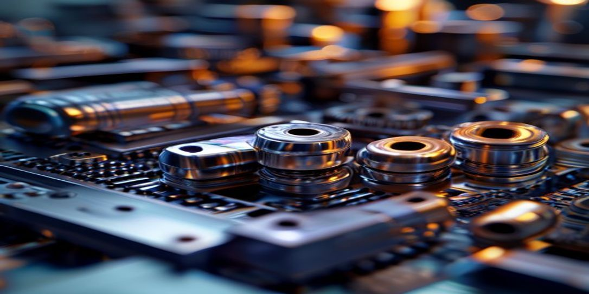

Análisis Operativo:
Metalurgia de titanio aeroespacial
La metalurgia de titanio aeroespacial es un nicho crítico en la industria aeroespacial que requiere un análisis exhaustivo para identificar las posibles limitaciones y riesgos asociados con este proceso. En este sentido, es fundamental destacar la existencia de pasivos ocultos que pueden afectar la eficiencia y la eficacia de la producción de componentes de titanio para aplicaciones aeroespaciales...
. Estos pasivos ocultos pueden incluir la variabilidad en la calidad de las materias primas, la complejidad de los procesos de fabricación y el costo asociado con la reparación y el mantenimiento de los equipos. Además, la falta de visibilidad en la cadena de suministro y la dependencia de proveedores especializados pueden generar riesgos significativos para la estabilidad y la calidad de la producción.
La ausencia de una gestión efectiva de la telemetría y la falta de precisión en la medición de los parámetros de proceso pueden generar fallos de retorno de la inversión que no son inmediatamente visibles. Estos fallos pueden incluir la ineficiencia en el uso de los recursos, la generación de residuos y la producción de componentes que no cumplen con los estándares de calidad requeridos. Por lo tanto, es fundamental implementar sistemas de telemetría avanzados que permitan monitorear y controlar en tiempo real los parámetros de proceso, como la temperatura, la presión y la velocidad de producción. Además, la implementación de herramientas de análisis de datos avanzados puede ayudar a identificar tendencias y patrones que no son inmediatamente visibles, lo que permite tomar decisiones informadas para optimizar el proceso de producción.
La precisión es un factor crítico en la metalurgia de titanio aeroespacial, ya que la producción de componentes que no cumplen con los estándares de calidad requeridos puede tener consecuencias graves en términos de seguridad y eficiencia. Por lo tanto, es fundamental implementar procesos de control de calidad rigurosos que garanticen la precisión y la exactitud en la producción de componentes. Esto puede incluir la implementación de sistemas de medición y verificación avanzados, como la inspección no destructiva y la prueba de propiedades mecánicas. Además, la capacitación y el desarrollo de habilidades de los empleados en la producción y el control de calidad son fundamentales para garantizar que los componentes sean producidos con la mayor precisión y exactitud posible.
En resumen, la metalurgia de titanio aeroespacial es un nicho crítico que requiere un análisis exhaustivo y una gestión efectiva para identificar y mitigar los pasivos ocultos y los fallos de retorno de la inversión no visibles. La implementación de sistemas de telemetría avanzados, la precisión en la medición de los parámetros de proceso y la implementación de procesos de control de calidad rigurosos son fundamentales para garantizar la eficiencia, la eficacia y la seguridad en la producción de componentes de titanio para aplicaciones aeroespaciales. Por lo tanto, es fundamental que las empresas que operan en este nicho inviertan en la capacitación y el desarrollo de habilidades de sus empleados, así como en la implementación de tecnologías avanzadas para garantizar la precisión y la exactitud en la producción de componentes.
La ausencia de una gestión efectiva de la telemetría y la falta de precisión en la medición de los parámetros de proceso pueden generar fallos de retorno de la inversión que no son inmediatamente visibles. Estos fallos pueden incluir la ineficiencia en el uso de los recursos, la generación de residuos y la producción de componentes que no cumplen con los estándares de calidad requeridos. Por lo tanto, es fundamental implementar sistemas de telemetría avanzados que permitan monitorear y controlar en tiempo real los parámetros de proceso, como la temperatura, la presión y la velocidad de producción. Además, la implementación de herramientas de análisis de datos avanzados puede ayudar a identificar tendencias y patrones que no son inmediatamente visibles, lo que permite tomar decisiones informadas para optimizar el proceso de producción.
La precisión es un factor crítico en la metalurgia de titanio aeroespacial, ya que la producción de componentes que no cumplen con los estándares de calidad requeridos puede tener consecuencias graves en términos de seguridad y eficiencia. Por lo tanto, es fundamental implementar procesos de control de calidad rigurosos que garanticen la precisión y la exactitud en la producción de componentes. Esto puede incluir la implementación de sistemas de medición y verificación avanzados, como la inspección no destructiva y la prueba de propiedades mecánicas. Además, la capacitación y el desarrollo de habilidades de los empleados en la producción y el control de calidad son fundamentales para garantizar que los componentes sean producidos con la mayor precisión y exactitud posible.
En resumen, la metalurgia de titanio aeroespacial es un nicho crítico que requiere un análisis exhaustivo y una gestión efectiva para identificar y mitigar los pasivos ocultos y los fallos de retorno de la inversión no visibles. La implementación de sistemas de telemetría avanzados, la precisión en la medición de los parámetros de proceso y la implementación de procesos de control de calidad rigurosos son fundamentales para garantizar la eficiencia, la eficacia y la seguridad en la producción de componentes de titanio para aplicaciones aeroespaciales. Por lo tanto, es fundamental que las empresas que operan en este nicho inviertan en la capacitación y el desarrollo de habilidades de sus empleados, así como en la implementación de tecnologías avanzadas para garantizar la precisión y la exactitud en la producción de componentes.
ACCESO RESTRINGIDO
AD SPACE
AdSense